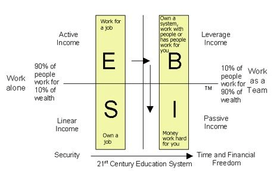
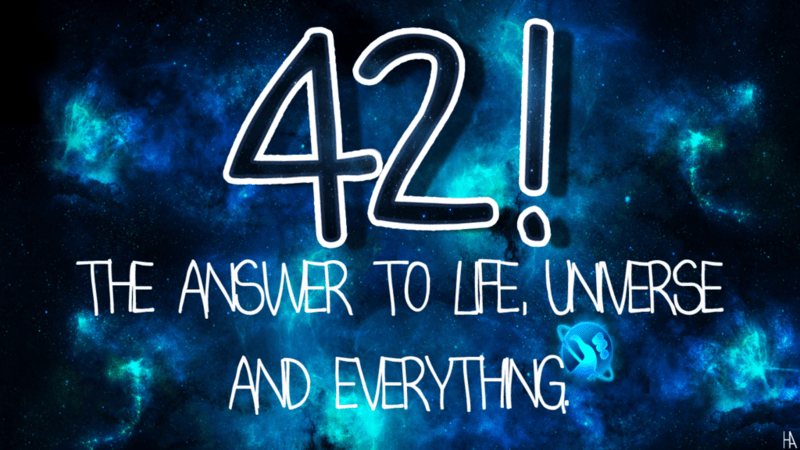

Why We Are All Immigrants: Embracing Earth as a Spaceship and the Journey Beyond
Earth: Our Spaceship in the Galaxy
Imagine Earth as a spaceship, hurtling through the vast expanse of the galaxy. This perspective isn't just poetic; it's scientific reality. Our planet is part of the solar system, which orbits around the center of the Milky Way galaxy. We are all passengers on this spaceship, traveling through space at an astonishing speed.
The Hitchhiker's Guide to the Galaxy, a seminal work of science fiction by Douglas Adams, whimsically explores this idea of space travel and the absurdity of our place in the universe. Adams' work reminds us that, in the grand scheme of things, Earth is just a tiny speck in a vast, incomprehensible cosmos.
Moving Beyond the Rat Race
In our world, the rat race and global conflicts often lead us to compare ourselves with one another, resulting in widespread poverty and missed opportunities. We become entangled in political disputes, losing sight of the bigger picture and failing to recognize the abundant resources the universe offers. There is more than enough in the cosmos for everyone, and by shifting our focus from divisive politics to collective progress, we can build assets that benefit all of humanity.

Beyond East to West: Moving Outside Earth
For millennia, human migration has been confined to the surface of our planet, moving from east to west, north to south. However, as our technological capabilities advance, the horizon of our potential movement extends beyond Earth itself. Space agencies like NASA, ESA, and private companies like SpaceX are actively working on making space travel a reality for more than just astronauts.
The concept of becoming a multi-planetary species is not just science fiction anymore; it's a growing field of research and development. Colonizing Mars, establishing bases on the Moon, and even exploring exoplanets are no longer distant dreams but tangible goals.

Backing Up and Moving Out: Escaping the Simulation
Thinking about leaving Earth and venturing into space is akin to backing up our data and moving to a new server. If Earth is a simulation, as some theories suggest, then finding new planets to inhabit could be seen as creating new simulations or environments for humanity to thrive. This doesn't mean abandoning Earth; it means ensuring the survival and diversification of human life.
Moving beyond Earth also means embracing the journey itself. The exploration of space can bring about unprecedented advancements in technology, new discoveries about the universe, and a deeper understanding of our own existence. It is a journey that could redefine what it means to be human.
Embracing the Journey: A New Beginning
The journey to becoming a multi-planetary species is as much about the adventure as it is about survival. Just like the characters in The Hitchhiker's Guide to the Galaxy, we must be prepared for the unexpected, ready to adapt, and willing to embrace the absurdity of our journey. We have the opportunity to start new beginnings, create new societies, and perhaps even redefine our values and way of life.
In conclusion, we are all immigrants on Earth, a spaceship traveling through the galaxy. Our journey doesn't have to end with our planet. By looking beyond our terrestrial borders and embracing the possibilities of space travel, we can ensure the continuation and flourishing of humanity. Let's take inspiration from The Hitchhiker's Guide to the Galaxy: don't forget your towel, keep a sense of humor, and always be ready for the next great adventure.
As we move forward, let's not just think about the next city or country, but the next planet, the next star system. The universe is vast, and our journey has just begun.
References
References for "Passengers" (2016 film):
- Wikipedia: "Passengers" (2016) is a science-fiction romance film directed by Morten Tyldum and written by Jon Spaihts. The film stars Chris Pratt and Jennifer Lawrence as two passengers on an interstellar spaceship who are awakened 90 years too early from their induced hibernation. They face the dilemma of living out their lives on the ship with no other human contact and must solve a potentially catastrophic malfunction in the spacecraft's system. The movie received mixed reviews, praised for its visual effects and performances, but criticized for its plot and character decisions【5†source】【7†source】.
References for "The Hitchhiker's Guide to the Galaxy":
-
Wikipedia: "The Hitchhiker's Guide to the Galaxy" is a comedic science fiction series by Douglas Adams. It began as a radio broadcast in 1978 and was later adapted into a series of novels, TV series, stage shows, and a feature film. The story follows Arthur Dent, the last human survivor after Earth is demolished to make way for a galactic freeway. He is taken on a journey through space by Ford Prefect, an alien writer for a travel guide, and encounters various characters including Zaphod Beeblebrox, Marvin the Paranoid Android, and Trillian【19†source】【20†source】.
-
Britannica: The book series, which began with the 1979 novel, is known for its satirical take on modern society, randomness, and absurdity, highlighting the misadventures of Arthur Dent and his friends as they navigate the universe【21†source】.
-
SparkNotes: The series starts with Arthur Dent being saved by Ford Prefect before Earth’s destruction and explores themes of survival, the meaning of life, and intergalactic bureaucracy【22†source】.
-
Pan Macmillan: The Hitchhiker's Guide to the Galaxy series consists of five books, known for their humorous take on science fiction tropes and their influence on popular culture【23†source】.
References for "Rich Dad Poor Dad":
- Wikipedia: "Rich Dad Poor Dad" is a personal finance book written by Robert T. Kiyosaki. It advocates financial independence through investing in assets, real estate, and owning businesses. The book contrasts the financial philosophies of Kiyosaki's "rich dad" (his friend’s father who was wealthy) and "poor dad" (his biological father who was educated but financially struggling). It emphasizes the importance of financial literacy and offers practical advice for building wealth【5†source】【7†source】【20†source】.
These sources provide comprehensive information on the respective topics and are useful for further exploration.
Imported from rifaterdemsahin.com · 2024